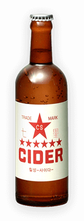
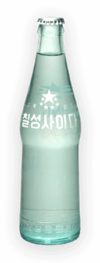
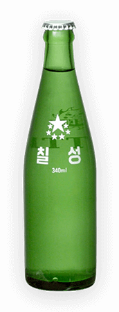
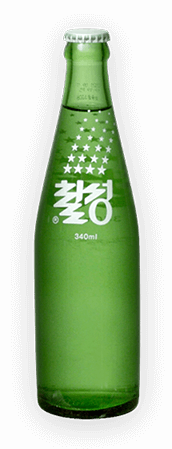

반세기 이상의 역사를 지닌
칠성사이다 Design History

칠성사이다의 시작은 갈색병이였다는 사실 알고 계셨나요?
일곱개의 별을 중심으로 디자인된 label은
Red의 강렬함을 통해 고급 음료임을 강조하였습니다.
1950

순수하고 깨끗한 느낌의 하늘색 병을 도입하여
당시 '고급 휴대용 순설탕제'로 대변되던
칠성사이다의 정체성을 표현하였습니다.
1960
브랜드 고유의 컬러를 'Chilsung Green'으로 정립하고,
병의 디자인을 리뉴얼 하여 길어진 병목과
부드러운 표면 질감 개선으로 더욱 세련됨을 표방하였습니다.
1970

당대 유명 배우들이 참여한 cf로 친숙한 디자인입니다.
80년대 트렌드였던 포스트모던을 기반으로한
일곱개의 '별'과 '칠성', 두가지 심볼의 힘과 균형미가 돋보입니다.
1980

톡톡 터지는 탄산의 상쾌함을 별의 모양으로 형상화 함과 동시에
물이 쏟아져 흐르는듯 미끄러져 내려오는 특유의 캘리그라피로
'맑고 깨끗한 칠성사이다'의 이미지를 전달하고 있습니다.
1990
많은 사람들이 함께한
칠성 사이다, 70주년의 추억


- 1950's
- 1960's
- 1970's
- 1980's
- 1990's
1/ 20